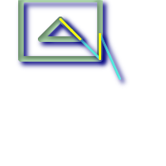

ST_SharedPaths — 二つのLINESTRING/MULTILINESTRINGの入力が共有するパスのコレクションを返します。
geometry ST_SharedPaths(geometry lineal1, geometry lineal2);
二つの入力ジオメトリが共有するパスのコレクションを返します。順方向に行くものはコレクションの一つ目の要素にあり、逆方向は二つ目の要素にあります。これらのパス自体は一つ目のジオメトリの方向をもとにします。
Availability: 2.0.0 GEOS 3.3.0以降が必要です。
マルチラインストリングとラインストリング |
 マルチラインストリングとラインストリングとの共有パスと元のジオメトリ。
SELECT ST_AsText(
ST_SharedPaths(
ST_GeomFromText('MULTILINESTRING((26 125,26 200,126 200,126 125,26 125),
(51 150,101 150,76 175,51 150))'),
ST_GeomFromText('LINESTRING(151 100,126 156.25,126 125,90 161, 76 175)')
)
) As wkt
wkt
-------------------------------------------------------------
GEOMETRYCOLLECTION(MULTILINESTRING((126 156.25,126 125),
(101 150,90 161),(90 161,76 175)),MULTILINESTRING EMPTY)
|
-- 同じ例ですがラインストリングの引数の順序を入れ替えています
SELECT ST_AsText(
ST_SharedPaths(
ST_GeomFromText('LINESTRING(76 175,90 161,126 125,126 156.25,151 100)'),
ST_GeomFromText('MULTILINESTRING((26 125,26 200,126 200,126 125,26 125),
(51 150,101 150,76 175,51 150))')
)
) As wkt
wkt
-------------------------------------------------------------
GEOMETRYCOLLECTION(MULTILINESTRING EMPTY,
MULTILINESTRING((76 175,90 161),(90 161,101 150),(126 125,126 156.25)))
|